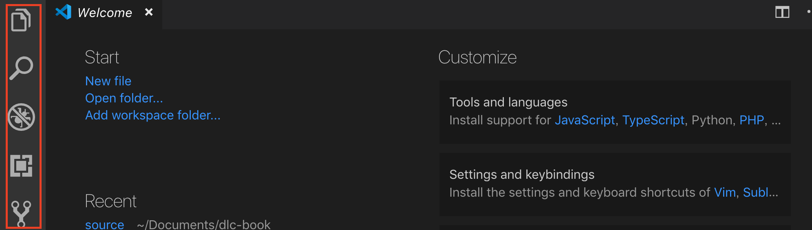

写作工具推荐¶
Visual Studio Code¶
进行文档写作与开发时，是完全可以用纯文本编辑器进行的，但集成度更高的开发工具，能为我们的实践提供更多便利。本节主要介绍微软旗下的 Visual Studio Code（简称VSCode）。
VSCode 是一款轻量但强大的开源代码编辑器，支持 Windows，OS X 和 Linux，内置JavaScript、TypeScript和Node.js支持，而且拥有丰富的插件生态系统，可通过安装插件来支持其他语言。
微软将 VSCode 定位于编辑器和 IDE（集成开发环境，具有编辑、编译和调试代码等功能）之间。对软件开发来说，它占内存小，轻量，界面简单友好，插件多样，能满足大部分需求。对于技术传播来说，它集成git，提供 Markdown 预览，也是管理项目和开发文档的好帮手。
功能简介¶

主界面左侧有五个功能按钮，从上到下依次是：
文件管理：管理当前文件夹的文件，可以进行新建、删除、移动文件等操作查找：在文件内进行查找，可进行相应的查找替换操作 代码调试：主要用于代码开发的调试工作插件管理：可打开、关闭、下载、删除相应插件Git 资源控制：连接部署 Git 相关
在本教程中，我们主要会用到文件管理和插件管理功能。
- 文件管理
- 插件管理